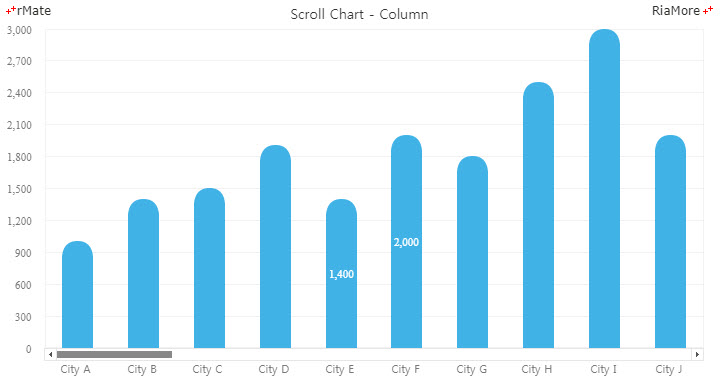
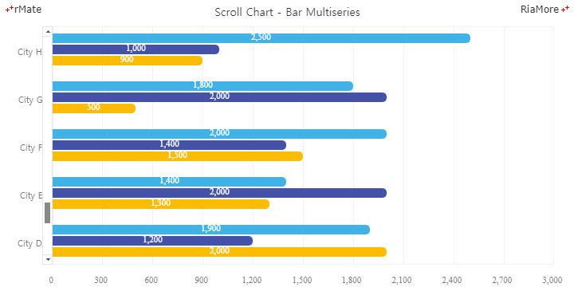
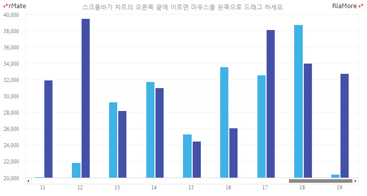

스크롤 차트
표현할 데이터의 수가 많은 경우, 지정된 개수(<ScrollableAxisRenderer> 노드의 visibleItemSize 속성값)의 데이터만 한 화면에 표시하고 나머지 데이터는 스크롤바 기능을 이용하여 조회가 가능하도록 하는 차트를 스크롤 차트라고 합니다.
스크롤 차트를 생성하기 위해서는 일반 차트를 생성하는 것과 동일한 방법으로 레이아웃을 작성하고 스크롤바가 위치할 축의 속성(<horizontalAxis>, <verticalAxis>)에
<CategoryLinearAxis> 노드를 설정하고, 축 렌더러 속성(<horizontalAxisRenderers>, <verticallAxisRenderers>)에 <ScrollableAxisRenderer> 노드를 설정합니다.
<CategoryLinearAxis> 노드는 <LinearAxis> 노드 클래스를 상속받은 클래스이기 때문에 <LinearAxis> 노드에서 사용하는 모든 속성을 사용할 수 있습니다.
<ScrollableAxisRenderer> 노드에서 사용 가능한 속성은 다음과 같습니다.
| 속성명 |
유효값 (*: 기본값) |
설명 |
| arrowScrollSize |
숫자
기본값: 1
|
사용자가 스크롤바의 화살표를 클릭했을 때 이동할 스크롤 크기를 지정합니다.
|
| scrollBarPlacement |
left(*), right, top, bottom
|
차트에서 스크롤바의 위치틑 지정합니다.
|
| scrollPosition |
숫자
기본값: 0
|
스크롤바의 시작 위치를 지정합니다.
|
| trackScrollSize |
숫자
기본값: visibleItemSize 속성값
|
사용자가 스크롤바의 트랙을 클릭했을 때 이동할 스크롤 크기를 지정합니다.
|
| visibleItemSize |
숫자
기본값: 5
|
차트에 표시할 데이터의 개수를 지정합니다.
|
다음은 컬럼 차트에 스크롤 차트 기능을 적용하는 코드와 출력된 결과입니다.
<Column2DChart showDataTips="true" gutterRight="10" columnWidthRatio="0.5">
<verticalAxis>
<LinearAxis interval="300" formatter="{numfmt}"/>
</verticalAxis>
<horizontalAxis>
<CategoryLinearAxis id="hAxis" categoryField="City"/>
</horizontalAxis>
<horizontalAxisRenderers>
<ScrollableAxisRenderer axis="{hAxis}" visibleItemSize="10" />
</horizontalAxisRenderers>
<series>
<Column2DSeries labelPosition="inside" color="#ffffff" yField="Data1" displayName="Data1" itemRenderer="SemiCircleColumnItemRenderer" showValueLabels="[4,5]"/>
</series>
</Column2DChart>

See the CodePen 알메이트 차트 - 스크롤 가능한 컬럼 차트
위 예제에서는 한 화면에 표현되는 데이터의 개수를 10 (visibleItemSize = “10”)으로 설정했습니다.
스크롤바의 스타일은 rMateChartH5.css 파일에 설정되어 있고, 다음 디렉토리에서 찾으실 수 있습니다.
설치 디렉토리/rMateChartH5/Assets/Css/
|
CSS 스타일의 내용은 다음과 같습니다.
.rMate__ScrollBar {
background-color:#fff;
}
.rMate__HScrollTrack, .rMate__VScrollTrack {
border:1px solid #e6e6e6;
}
.rMate__HScrollThumb, .rMate__VScrollThumb {
cursor:pointer;
background-color:#e6e6e6;
transition:background-color 0.2s;
}
.rMate__HScrollThumb:hover, .rMate__VScrollThumb:hover{
background-color:#888888;
}
.rMate__HScrollThumbHeader{
}
.rMate__HScrollUpArrow {
border:1px solid #e6e6e6;
cursor:pointer;
background:url("./scroll_left_arrow.png") no-repeat 50% 50%;
}
.rMate__HScrollDownArrow {
border:1px solid #e6e6e6;
cursor:pointer;
background:url("./scroll_right_arrow.png") no-repeat 50% 50%;
}
.rMate__VScrollThumbHeader{
}
.rMate__VScrollUpArrow {
border:1px solid #e6e6e6;
border-right:none;
cursor:pointer;
background:url("./scroll_up_arrow.png") no-repeat 50% 50%;
}
.rMate__VScrollDownArrow {
border:1px solid #e6e6e6;
border-right:none;
cursor:pointer;
background:url("./scroll_down_arrow.png") no-repeat 50% 50%;
}
다음은 바 차트에 세로 스크롤바를 표시하는 코드와 출력된 결과입니다.
<Bar2DChart showDataTips="true" gutterRight="20" gutterTop="10" gutterBottom="50" gutterLeft="60" barWidthRatio="0.7">
<horizontalAxis>
<LinearAxis interval="300" formatter="{numfmt}"/>
</horizontalAxis>
<verticalAxis>
<CategoryLinearAxis id="hAxis" categoryField="City" ticksBetweenLabels="true"/>
</verticalAxis>
<verticalAxisRenderers>
<ScrollableAxisRenderer axis="{hAxis}" visibleItemSize="5"/>
</verticalAxisRenderers>
<series>
<Bar2DSeries ... />
<Bar2DSeries ... />
<Bar2DSeries ... />
</series>
</Bar2DChart>

See the CodePen 알메이트 차트 - 스크롤 가능한 바 차트
레이지 로드
스크롤 차트에서 전체 데이터를 차트가 생성되는 시점에 한번에 로드한다면, 데이터를 처리하는 시간이 많이 소요될 것이고 결과적으로 차트가 화면에 표현되기까지 사용자가 오랜 시간을 기다려야하는 문제가 생길 수 있습니다.
어짜피 한 화면에서 사용자가 식별할 수 있는 데이터의 수는 한정되어 있기 때문에, 한 화면에 표현 하기 적당한 데이터의 수 단위로 처리를 하는 것이 효율적일 것입니다.
그러기 위해서는 스크롤바의 위치가 끝 부분에 도달하면 자동으로 새로운 자료를 로드하는 것이 필요한데, 이렇게 데이터를 처리하는 방식을 레이지 로딩(Lazy Loading)이라고 합니다.
알메이트 차트에서는 스크롤바의 이벤트를 받아서 레이지 로딩을 처리할 수 있도록하는 lazyJsFunction 속성을 제공합니다.
다음은 컬럼 차트의 한 화면에 19 개의 데이터를 표현한다고 가정할 때 레이지 로딩을 처리하기 위한 레이아웃과 코드입니다.
<Column2DChart showDataTips="true" gutterRight="10" lazyJsFunction="lazyDataFunc">
...
</Column2DChart>
var xhr, // Ajax object
index = 19; // 한 화면에 19개의 데이터를 표현
function lazyDataFunc(id){
var param = {};
param.url = dataURL + (index + 1);
param.success = function() {
var data;
if (xhr.readyState == 4 && xhr.status >= 200 && xhr.status < 300) {
if (xhr.responseXML.xml)
data = xhr.responseXML.xml;
else
data = xhr.responseXML;
document.getElementById(id).addData(data);
index += 20;
}
}
ajax(param);
}

See the CodePen 알메이트 차트 - 스크롤 가능한 컬럼 차트에서 레이지 로드